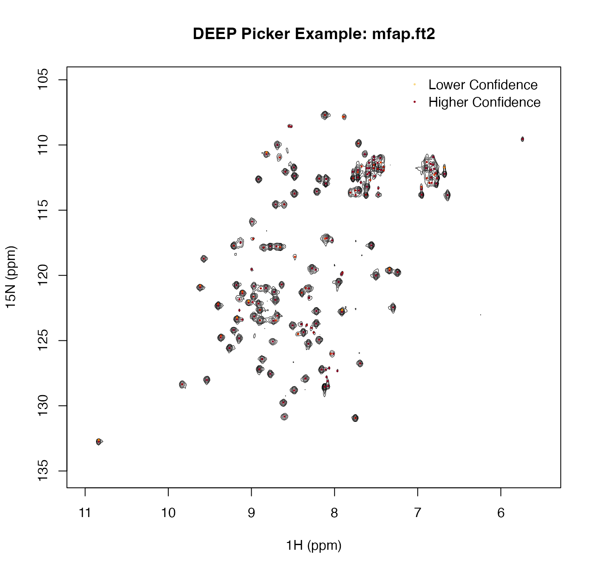

DEEP Picker is an artificial neural network based 2D NMR spectral peak picking and deconvolution tool. It predicts every 2D cross-peak locally without taking into account the behavior of spectral data points that are further away. In practice, it provides an excellent starting point for downstream quantitative fitting workflows.
Usage
deep_picker(
spectrum,
ppm = NULL,
noise = NULL,
scale = 5.5,
scale2 = 3,
model = 1L,
auto_ppp = TRUE,
t1_noise = FALSE,
negative = FALSE,
debug_flag = 0L,
verbose = TRUE,
as_data_frame = TRUE
)Arguments
- spectrum
Numeric matrix with the indirect dimension in rows and the direct dimension in columns.
- ppm
Optional numeric vector `c(begin1, step1, begin2, step2)` giving the ppm origin and increment for the direct and indirect dimensions. If `NULL`, `deep_picker()` derives these values from numeric column names (direct dimension) and row names (indirect dimension).
- noise
Spectrum noise level. If `NULL`, `deep_picker()` estimates the noise internally using the same default variance-based procedure as the DEEP Picker command-line program.
- scale
Minimal peak amplitude cutoff, expressed as a multiple of the noise level. The default is `5.5`.
- scale2
Noise-floor cutoff, expressed as a multiple of the noise level. Spectral points below this threshold are set to zero before peak picking. The default is `3.0`.
- model
ANN model selection. `1L` corresponds to the broader PPP range typical for protein spectra; `2L` corresponds to the narrower PPP range typical for metabolomics spectra.
- auto_ppp
Logical; whether to adjust PPP automatically using cubic spline interpolation.
- t1_noise
Logical; whether to remove possible `t1` noise peaks.
- negative
Logical; whether to pick negative peaks in addition to positive peaks.
- debug_flag
Integer debug flag forwarded to the DEEP Picker core.
- verbose
Logical; whether to print DEEP Picker progress messages.
- as_data_frame
Logical; if `TRUE`, return a data frame of peaks. If `FALSE`, return a list with the peak table, estimated median widths, and noise level.
Value
If `as_data_frame = TRUE`, a data frame with one row per picked peak and the following columns:
- `x`, `y`
Peak coordinates in DEEP Picker point units for the direct (`x`) and indirect (`y`) dimensions.
- `ppm_x`, `ppm_y`
Peak positions converted to ppm for the direct and indirect dimensions.
- `intensity`
Estimated peak intensity.
- `sigmax`, `sigmay`
Estimated Gaussian width components in the direct and indirect dimensions.
- `gammax`, `gammay`
Estimated Lorentzian width components in the direct and indirect dimensions.
- `confidence`
Peak confidence score on a 0 to 1 scale. For 2D peaks, this wrapper reports the smaller of the two axis-specific confidence values returned by DEEP Picker.
If `as_data_frame = FALSE`, a list with components:
- `peaks`
The peak data frame described above.
- `median_width`
Length-2 numeric vector of median peak widths in DEEP Picker point units, ordered as direct dimension then indirect dimension.
- `noise_level`
Noise level used during picking, either supplied by the user or estimated internally.
Details
This wrapper exposes the DEEP Picker 2D peak-picking engine for spectra that are already available in R memory. The `model` argument follows the DEEP Picker guidance: use `1L` for spectra with about 6 to 20 points per peak (typical for protein spectra) and `2L` for spectra with about 4 to 12 points per peak (typical for metabolomics spectra). When `auto_ppp = TRUE`, DEEP Picker adjusts PPP automatically using cubic spline interpolation; the DEEP Picker documentation recommends leaving this enabled unless there is a specific reason not to.
References
Li, D.-W., Hansen, A. L., Yuan, C., Bruschweiler-Li, L., and Bruschweiler, R. (2021). DEEP Picker is a Deep Neural Network for Accurate Deconvolution of Complex Two-Dimensional NMR Spectra. Nature Communications, 12, 5229. DOI: 10.1038/s41467-021-25496-5.
Examples
path <- system.file("extdata", "mfap.ft2", package = "deeppicker")
spectrum <- read_spectrum_2d(path)
peaks <- deep_picker(spectrum)
#> In noise estimation, ndata_frq*ydim is 180224
#> Noise level is 118197 using variance estimation.
#> Final noise level is estiamted to be 112026
#> Minimal peak intensity is set to 560129
#> Picked 150 peaks for peak width estimation.
#> Interpolation step size is 0.329704 in direct dimension.
#> Interpolation step size is 0.234875 in indirect dimension.
#> Minimal peak intensity is set to 560129
#> Picked 193 peaks for peak width estimation.
#> After interpolation, median peak width is 11.6577 in direct dimension, 9.63969 in indirect dimension.
#> After interpolation, spectrum size is 2135 1090
#> After interpolation, step1,step2 is -0.00257935 -0.0275285
#> Finish 500 columns out of 2135
#> Finish 1000 columns out of 2135
#> Finish 1500 columns out of 2135
#> Finish 2000 columns out of 2135
#> Finish 500 rows out of 1090
#> Finish 1000 rows out of 1090
#> Finished 1D prediction.
#> Get lines from dots. Done.
#> Finished ANN peak picking.
#> Picked 177 peaks.
#> Median peak width is estimated to be 12.0431 9.67138 from ann picking.
#> On original spectrum without interpolation, median peak width is 3.97066 2.27157
ppm_x <- as.numeric(colnames(spectrum))
ppm_y <- as.numeric(rownames(spectrum))
ix <- order(ppm_x)
iy <- order(ppm_y)
x_inc <- ppm_x[ix]
y_inc <- ppm_y[iy]
z <- t(spectrum[iy, ix, drop = FALSE])
positive <- spectrum[spectrum > 0]
base_level <- 6 * stats::median(abs(positive))
max_level <- max(positive)
levels <- exp(seq(log(base_level), log(max_level), length.out = 8))
contour(x_inc, y_inc, z, levels = levels, drawlabels = FALSE, lwd = 0.5,
xlim = rev(range(x_inc)), ylim = rev(range(y_inc)),
xlab = "1H (ppm)", ylab = "15N (ppm)",
main = "DEEP Picker Example: mfap.ft2")
cols <- grDevices::hcl.colors(100, "YlOrRd", rev = TRUE)
conf_idx <- pmax(1L, ceiling(peaks$confidence * 99))
points(peaks$ppm_x, peaks$ppm_y, pch = 16, cex = 0.35, col = cols[conf_idx])
legend("topright",
legend = c("Lower Confidence", "Higher Confidence"),
pch = 16, pt.cex = 0.35, col = cols[c(25, 95)], bty = "n")
